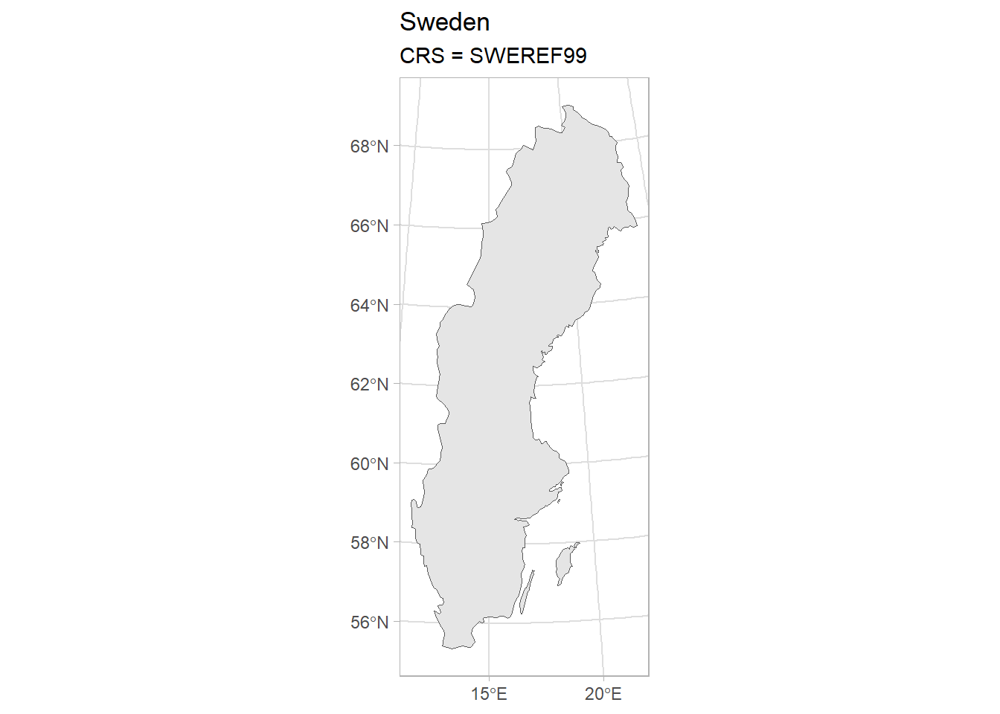
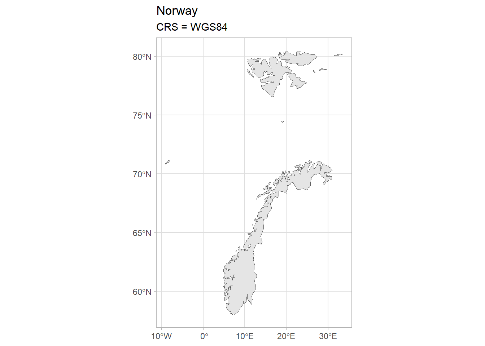
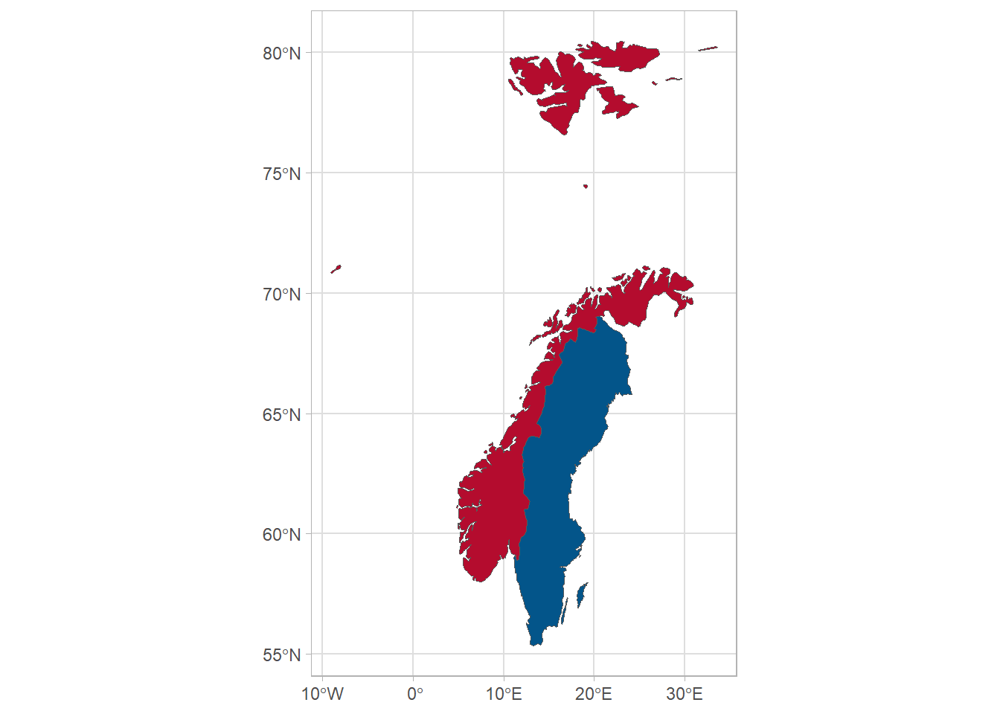
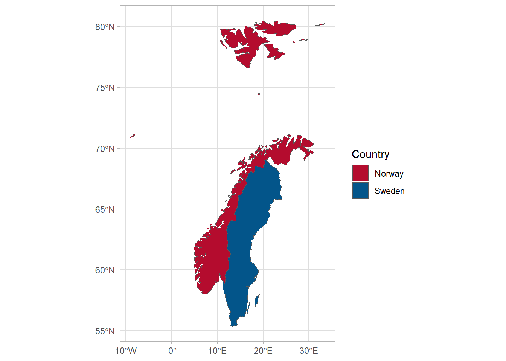
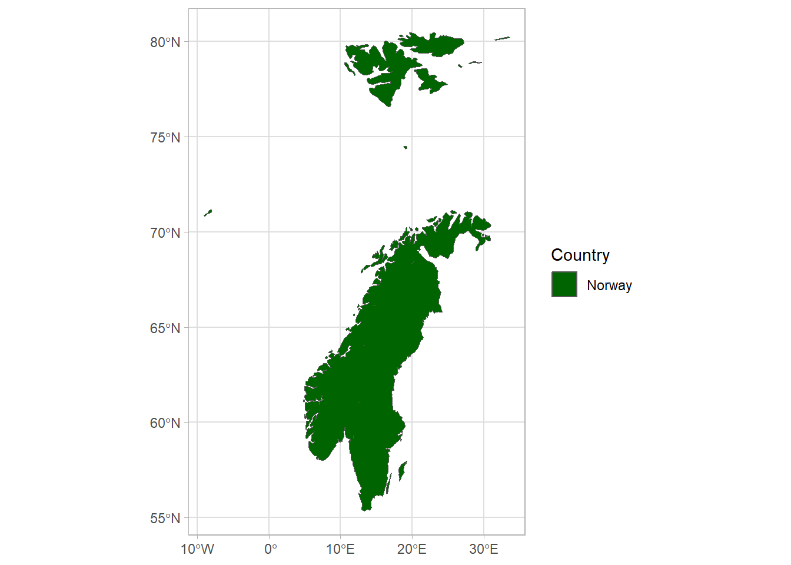

library(tidyverse)
library(sf)
theme_set(theme_light())Map projections in R
A post on how to change projections for mapping and save out the new shapefiles.
Purpose
Transform two shapefiles to the same coordinate system and plot them together.
Getting started
We load the tidyverse for data manipulation, the sf package fo working with maps and set the ggplot theme to a light one for more attractive plots.
Read in the shapefiles
We read in our shapefiles with the st_read() function, and ask for output of the crs with the st_crs() function so that we can see what it is.
For Sweden we can see we are told in he last line Projected CRS: SWEREF99 TM.
SWEREF99 TM a projection favoured by the statistics body in Sweden.
sweden_map <- st_read(here::here("posts",
"2023-01-31-map-projections",
"data",
"sweden_map.shp"))Reading layer `sweden_map' from data source
`C:\Users\User\Documents\Recon\interlude-one\posts\2023-01-31-map-projections\data\sweden_map.shp'
using driver `ESRI Shapefile'
Simple feature collection with 1 feature and 63 fields
Geometry type: MULTIPOLYGON
Dimension: XY
Bounding box: xmin: 278651.2 ymin: 6134621 xmax: 917514.5 ymax: 7668755
Projected CRS: SWEREF99 TMFor Norway it is WGS 84, a very common projection with full name World Geodetic System 1984.
norway_map <- st_read(here::here("posts",
"2023-01-31-map-projections",
"data",
"norway_map.shp"))Reading layer `norway_map' from data source
`C:\Users\User\Documents\Recon\interlude-one\posts\2023-01-31-map-projections\data\norway_map.shp'
using driver `ESRI Shapefile'
Simple feature collection with 1 feature and 63 fields
Geometry type: MULTIPOLYGON
Dimension: XY
Bounding box: xmin: -9.098877 ymin: 58.02095 xmax: 33.6293 ymax: 80.47783
Geodetic CRS: WGS 84Let’s have a quick look at them side by side.
ggplot()+
geom_sf(data = sweden_map) +
labs(title = "Sweden",
subtitle = "CRS = SWEREF99")
ggplot()+
geom_sf(data = norway_map) +
labs(title = "Norway",
subtitle = "CRS = WGS84")

Set the crs as the same
We’ll use EPSG 4326 or WGS84. We can use the st_transform() function, specifying the crs that we want for our new map object, which we name sweden_map_4326 to avoid confusion.
This is what the CRS now looks like for Sweden - the same as the one for Norway.
sweden_map_4326 <- st_transform(sweden_map, crs = 4326)
sweden_map_4326 %>%
st_crs()Coordinate Reference System:
User input: EPSG:4326
wkt:
GEOGCRS["WGS 84",
DATUM["World Geodetic System 1984",
ELLIPSOID["WGS 84",6378137,298.257223563,
LENGTHUNIT["metre",1]]],
PRIMEM["Greenwich",0,
ANGLEUNIT["degree",0.0174532925199433]],
CS[ellipsoidal,2],
AXIS["geodetic latitude (Lat)",north,
ORDER[1],
ANGLEUNIT["degree",0.0174532925199433]],
AXIS["geodetic longitude (Lon)",east,
ORDER[2],
ANGLEUNIT["degree",0.0174532925199433]],
USAGE[
SCOPE["Horizontal component of 3D system."],
AREA["World."],
BBOX[-90,-180,90,180]],
ID["EPSG",4326]]Let’s plot them together
We can plot the together and choose some nice colours from the national flags for the fill aesthetic.
ggplot() +
geom_sf(data = sweden_map_4326, fill = "#03558A") +
geom_sf(data = norway_map, fill = "#B40C2E")
Write out the file for Sweden individually
We can save the shapefile for Sweden with the st_write() command if we want to keep the maps separate.
sweden_map_4326 %>%
st_write(here::here("posts",
"2023-01-31-map-projections",
"data",
"sweden_map_4326.shp"), delete_dsn = TRUE)Deleting source `C:/Users/User/Documents/Recon/interlude-one/posts/2023-01-31-map-projections/data/sweden_map_4326.shp' using driver `ESRI Shapefile'
Writing layer `sweden_map_4326' to data source
`C:/Users/User/Documents/Recon/interlude-one/posts/2023-01-31-map-projections/data/sweden_map_4326.shp' using driver `ESRI Shapefile'
Writing 1 features with 63 fields and geometry type Multi Polygon.Join the maps together
Alternatively we can join together the maps as one object and then save one shapefile with the maps combined.
To do this, we first bind the two objects together using bind_rows() command and write it out with the same st_write() command.
combined_map <- bind_rows(norway_map, sweden_map_4326)
combined_map %>% st_write(here::here("posts",
"2023-01-31-map-projections",
"data",
"shapefile_combined.shp"), delete_dsn = TRUE)Deleting source `C:/Users/User/Documents/Recon/interlude-one/posts/2023-01-31-map-projections/data/shapefile_combined.shp' using driver `ESRI Shapefile'
Writing layer `shapefile_combined' to data source
`C:/Users/User/Documents/Recon/interlude-one/posts/2023-01-31-map-projections/data/shapefile_combined.shp' using driver `ESRI Shapefile'
Writing 2 features with 63 fields and geometry type Multi Polygon.If we want to get rid of the borders between our objects, we can use the st_union() command:
union_map <- st_union(norway_map, sweden_map_4326)We can compare the outputs here:
# Combined map
ggplot() +
geom_sf(data = combined_map, aes(fill = sovereignt)) +
scale_fill_manual(values = c("#B40C2E", "#03558A")) +
labs(fill = "Country")
# Union map
ggplot() +
geom_sf(data = union_map, aes(fill = sovereignt)) +
scale_fill_manual(values = c("darkgreen")) +
labs(fill = "Country")
bind_rows
st_unionWhile st_union() is not useful in this particular instance, it may be of use to you in the future!
Conclusion
Here we learned how to make it possible to plot maps with two different projections together by making use of the st_transform() command in R. We learned how to save the two maps as separate features in a shapefile, as well as how to combine them together. We can import the shapefile into any other software for plotting.